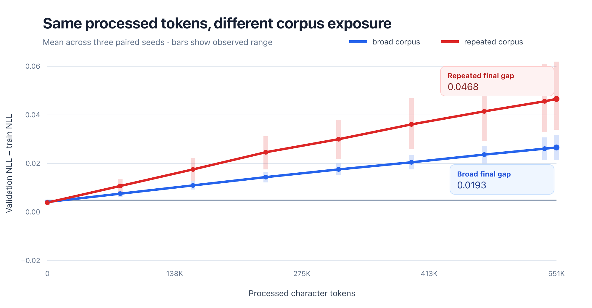

AReference
Low exposure
27,648
processed characters
- Corpus
- 25,184 chars
- Effective epochs
- 1.10
- Tokens / parameter
- 1.00
Controlled Transformer experiment
Two identical 27,520-parameter Transformers received the same training-token budget. One replayed a tiny corpus. The other drew from a much broader corpus.
The result at a glance

One question, three conditions
All three runs use the same tiny GPT-style architecture. The comparison changes only the amount of training corpus available before sampling begins to repeat.
27,648
processed characters
550,656
processed characters
550,656
processed characters
Held constant
Within each seed, every condition starts from the exact same saved weights. ScaleLab checks the controls before training and refuses mismatched reports.
Interactive token budget
This calculator recomputes training exposure for the fixed 27,520-parameter model. It does not invent new loss results—those require retraining.
Why actual exceeds target: every optimizer step consumes a complete batch of 8 × 96 = 768 character tokens, so ScaleLab rounds up to the next full step.
Measured, not guessed
The repeated model achieved a slightly better training fit, yet its held-out loss was worse. That is the central signal.
Average prediction error in nats per character. Lower is better.
The model's effective uncertainty about the next character. Lower is better.
Validation NLL minus training NLL. A larger gap is consistent with stronger overfitting.
| Condition | Train NLL | Train PPL | Validation NLL | Validation PPL | Gap |
|---|---|---|---|---|---|
| Broad corpus | 3.1758 | 23.95 | 3.1952 | 24.41 | 0.0193 |
| Repeated corpus | 3.1698 | 23.80 | 3.2165 | 24.94 | 0.0468 |
What it means
A tokens-per-parameter number tells us how much training computation occurred. It does not tell us whether those tokens were new, repeated, redundant, high quality, or informative.
At this tiny character-model scale, replaying a small corpus to reach the same token budget produced a larger generalization gap than drawing that budget from more corpus positions.
Data provenance
Jane Austen · Project Gutenberg #1342
The 25,184-character repeated corpus is the exact prefix of the 719,847-character broad corpus.Lewis Carroll · Project Gutenberg #11
Validation is encoded independently, so no context window can cross the training/validation boundary.How it was built
Normalize two separate Gutenberg books and record every corpus hash.
Instantiate the model, count parameters, freeze the tokenizer, and verify controls.
Create one deterministic SafeTensor per seed and reuse it across conditions.
Run nine CPU jobs with Candle, AdamW, causal attention, and fixed evaluation.
Validate hashes, aggregate seeds, and generate NLL, perplexity, gap, CSV, and SVG artifacts.
Do not trust the graph
ScaleLab-RS is an educational GPT implementation and controlled experiment harness written in Rust with Hugging Face Candle.
cargo run --release -- experiment experiments/mvp.toml